Candidate 0 is today's look. Each candidate re-hues the current primitives at the same WCAG luminance, and all pass the full token test. Click a board for full size. Swatches: background, surface, text, primary, link, focus, danger, warning background.
b0-currentToday's values, for reference.
Fonts: system-ui headings, system-ui body
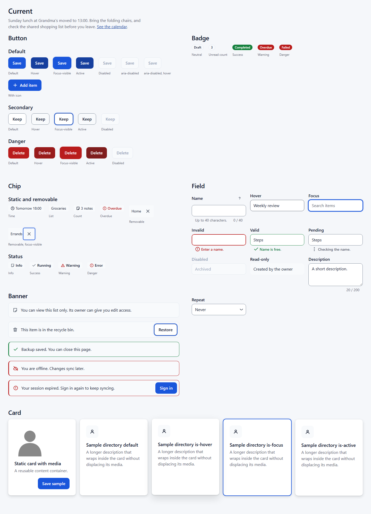
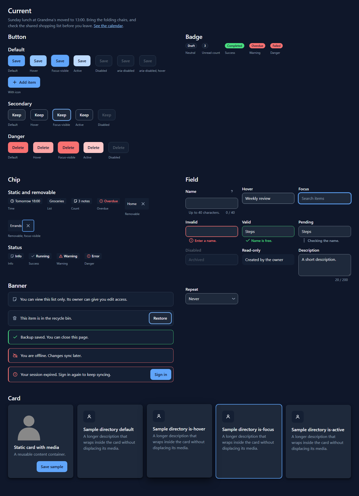
b1-vivid-azureThe closest to today: a more saturated azure blue and crisper slate, system fonts stay.
Fonts: System stack (unchanged)
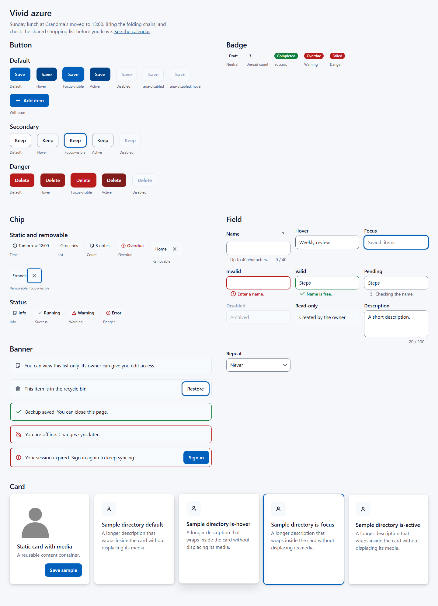
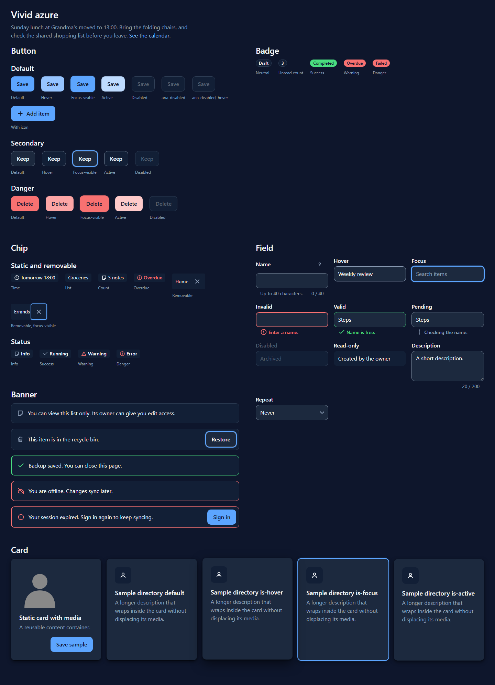
b2-indigo-interIndigo-leaning blue on violet-tinted slate, set in Inter like the neutral look.
Fonts: Inter
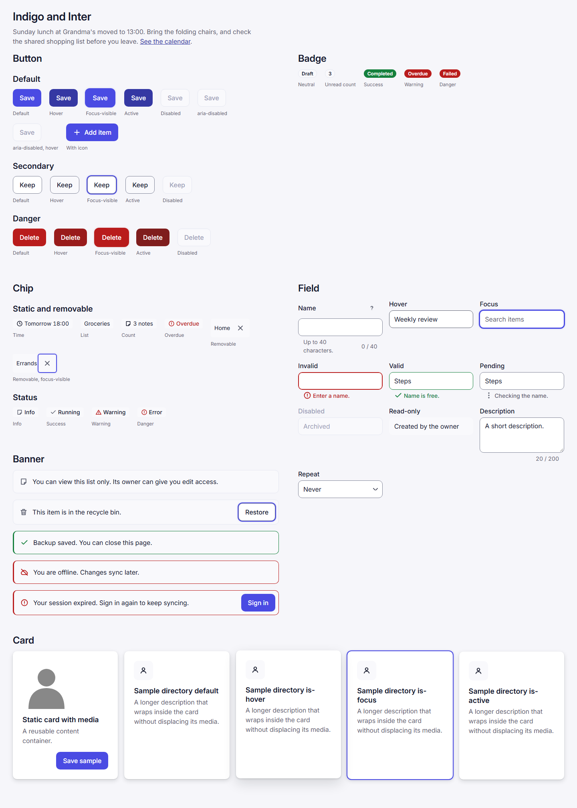
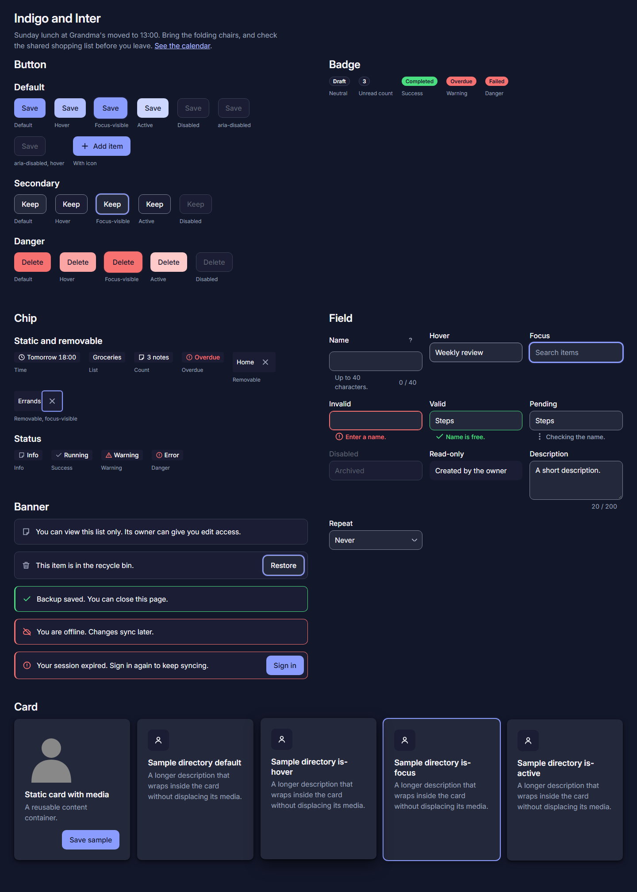
b3-zinc-electricNear-neutral zinc grays with a punchy electric blue and the geometric Manrope.
Fonts: Manrope
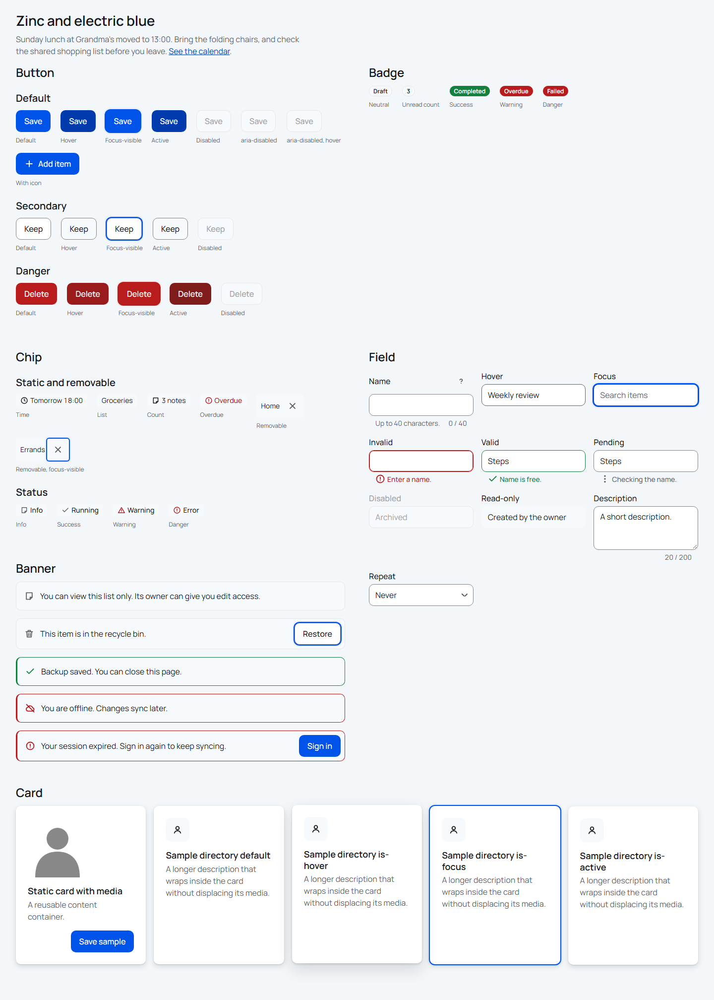
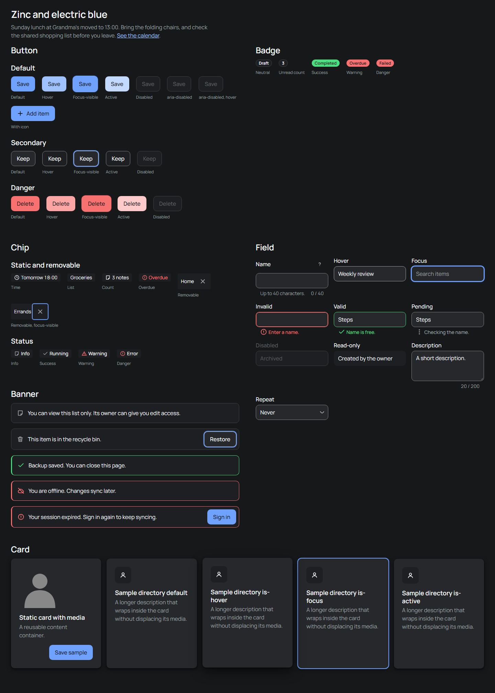
b4-stone-royalWarm stone grays, royal blue, and the friendly Figtree.
Fonts: Figtree
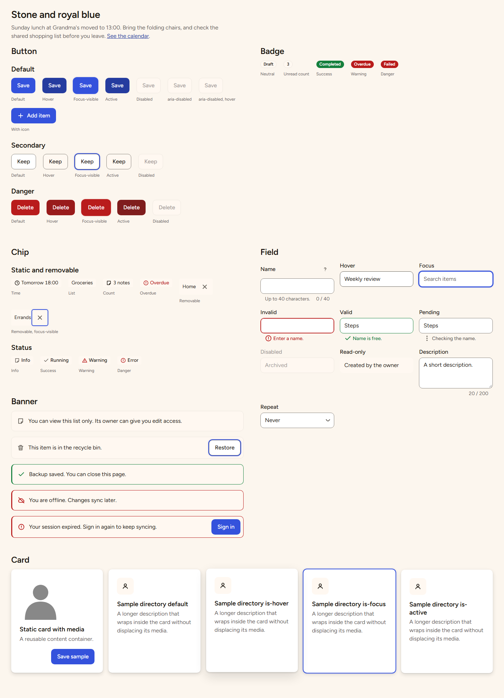
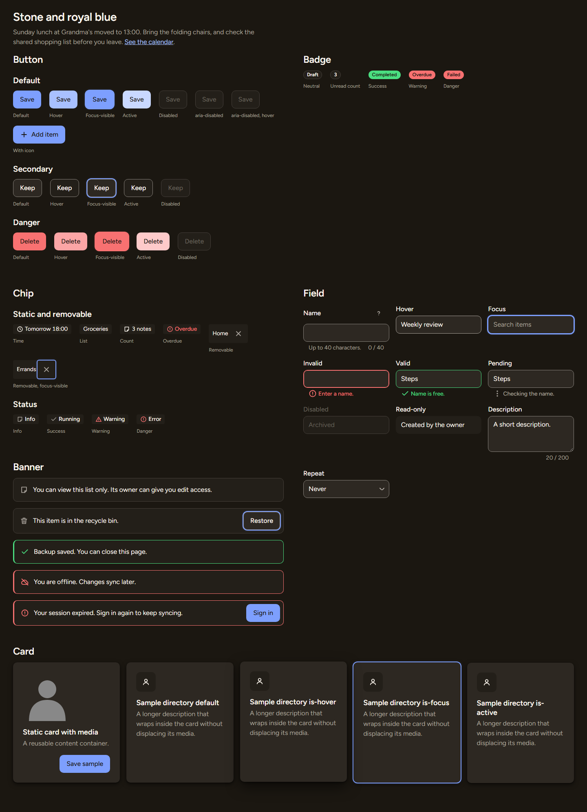
b5-ocean-raspberryCerulean blue on sea-tinted slate, raspberry reds, and the open Lexend.
Fonts: Lexend
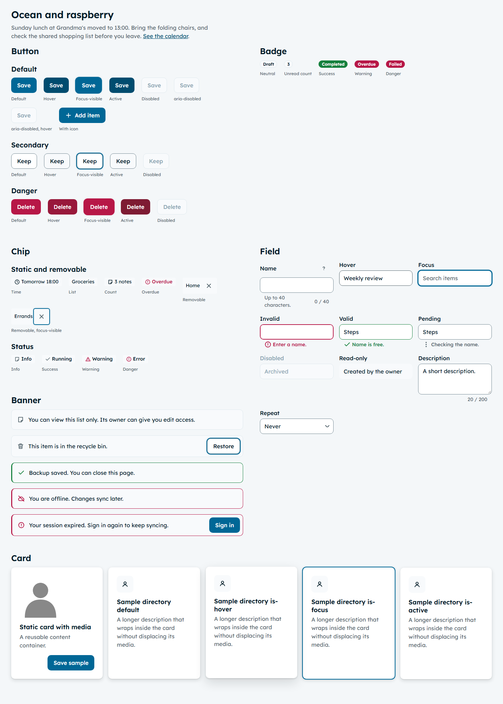
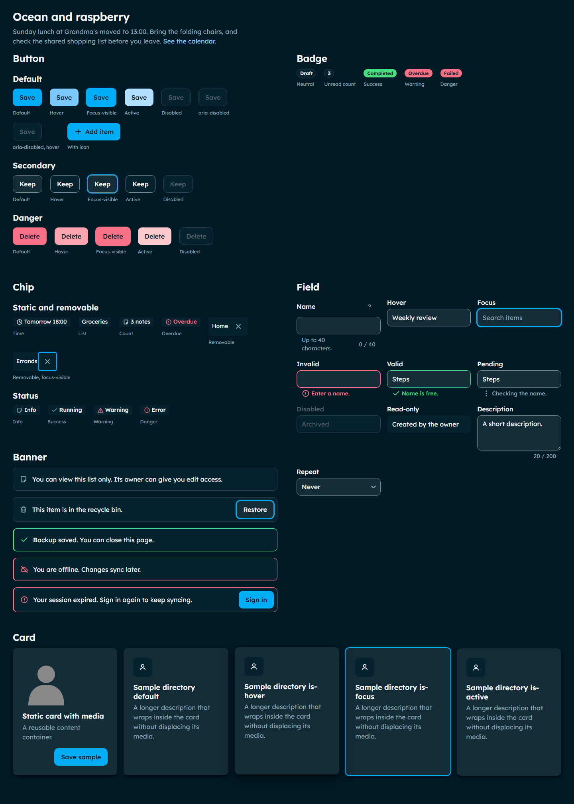